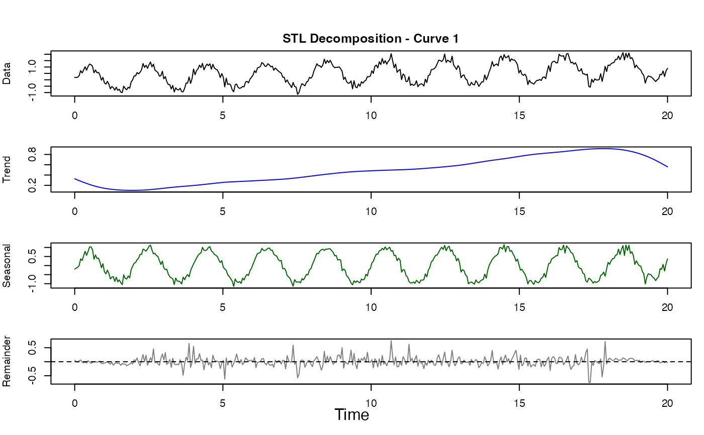

Performs STL (Seasonal and Trend decomposition using LOESS) on functional data following Cleveland et al. (1990). This is a robust iterative procedure that separates a time series into trend, seasonal, and remainder components.
Arguments
- fdataobj
An fdata object.
- period
Integer. The seasonal period (number of observations per cycle).
- s.window
Seasonal smoothing window. Must be odd. If NULL, defaults to 7. Larger values produce smoother seasonal components.
- t.window
Trend smoothing window. Must be odd. If NULL, automatically calculated based on period and s.window.
- robust
Logical. If TRUE, performs robustness iterations to downweight outliers using bisquare weighting. Default: TRUE.
Value
A list of class "stl_result" with components:
- trend
fdata object containing trend components
- seasonal
fdata object containing seasonal components
- remainder
fdata object containing remainder (residual) components
- weights
Matrix of robustness weights (1 = full weight, 0 = outlier)
- period
The period used
- s.window
Seasonal smoothing window used
- t.window
Trend smoothing window used
- inner.iterations
Number of inner loop iterations
- outer.iterations
Number of outer (robustness) iterations
- call
The function call
Details
The STL algorithm proceeds as follows:
Inner Loop (repeated n.inner times):
Detrending: Subtract current trend estimate
Cycle-subseries smoothing: Smooth values at each seasonal position across cycles
Low-pass filtering: Remove high-frequency noise
Detrending the smoothed cycle-subseries
Deseasonalizing: Subtract seasonal from original data
Trend smoothing: Apply LOESS to deseasonalized data
Outer Loop (for robustness):
Compute residuals from current decomposition
Calculate robustness weights using bisquare function
Re-run inner loop with weighted smoothing
STL is particularly effective for:
Long time series with many cycles
Data with outliers (when robust=TRUE)
Slowly changing seasonal patterns
References
Cleveland, R. B., Cleveland, W. S., McRae, J. E., & Terpenning, I. (1990). STL: A Seasonal-Trend Decomposition Procedure Based on Loess. Journal of Official Statistics, 6(1), 3-73.
Examples
# Create seasonal data with trend
t <- seq(0, 20, length.out = 400)
period <- 2 # corresponds to 40 observations
period_obs <- 40
X <- matrix(0.05 * t + sin(2 * pi * t / period) + rnorm(length(t), sd = 0.2), nrow = 1)
fd <- fdata(X, argvals = t)
# Perform STL decomposition
result <- stl.fd(fd, period = period_obs)
print(result)
#> STL Decomposition
#> -----------------
#> Period: 40 observations
#> Seasonal window: 7
#> Trend window: 77
#> Inner iterations: 2
#> Outer iterations: 15 (robust=TRUE)
#>
#> Number of curves: 1
#> Series length: 400
#>
#> Variance decomposition:
#> Trend: 11.9%
#> Seasonal: 82.7%
#> Remainder: 5.3%
# Plot the decomposition
plot(result)

# Non-robust version (faster but sensitive to outliers)
result_fast <- stl.fd(fd, period = period_obs, robust = FALSE)